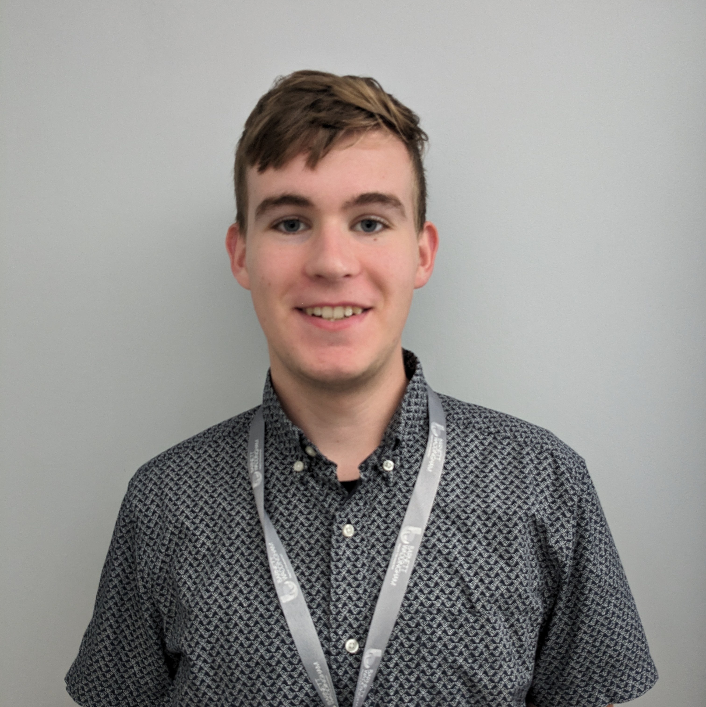
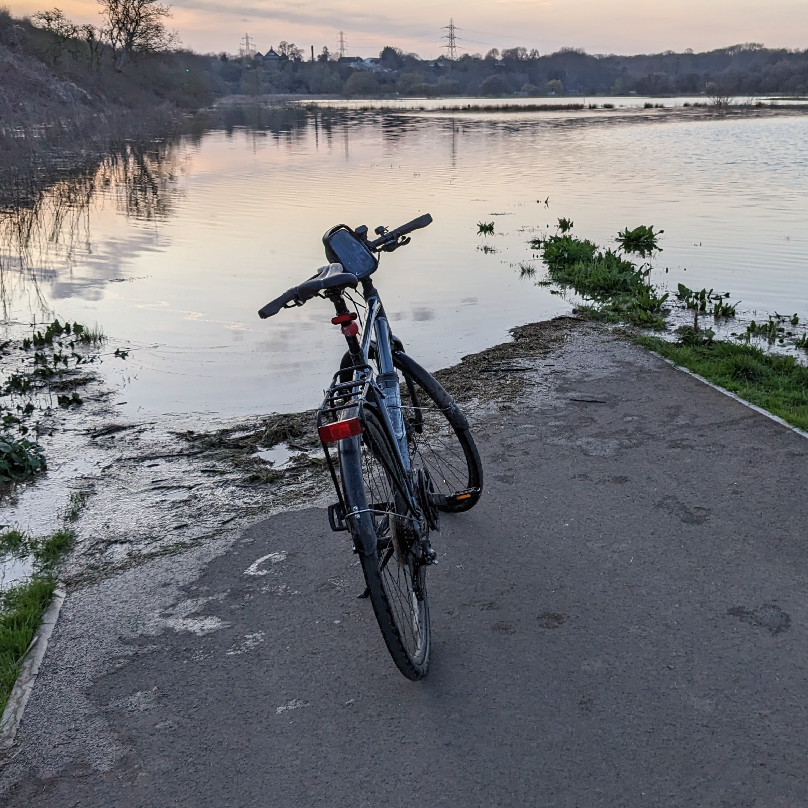
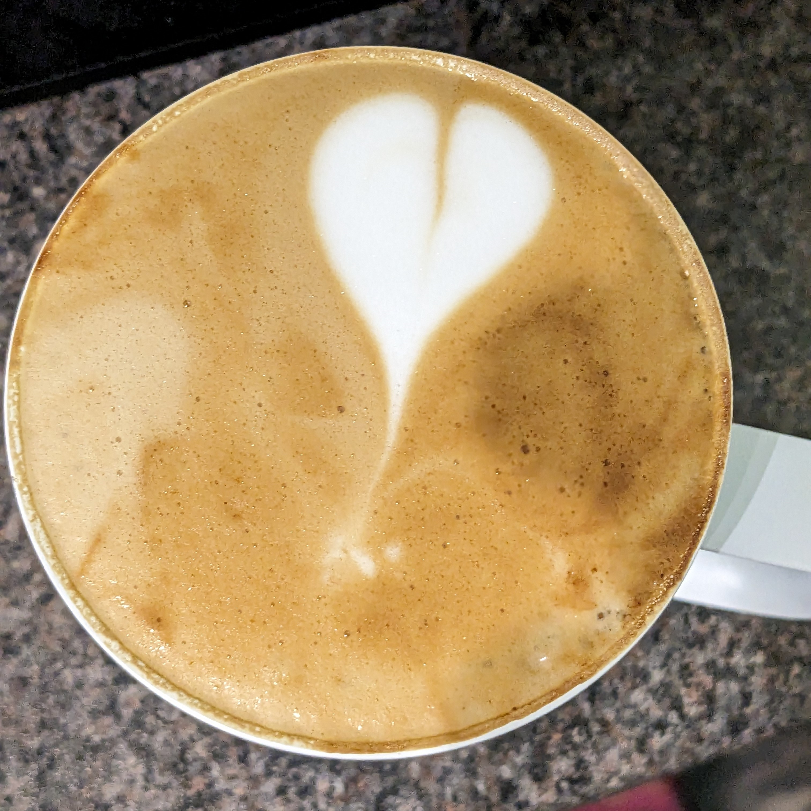
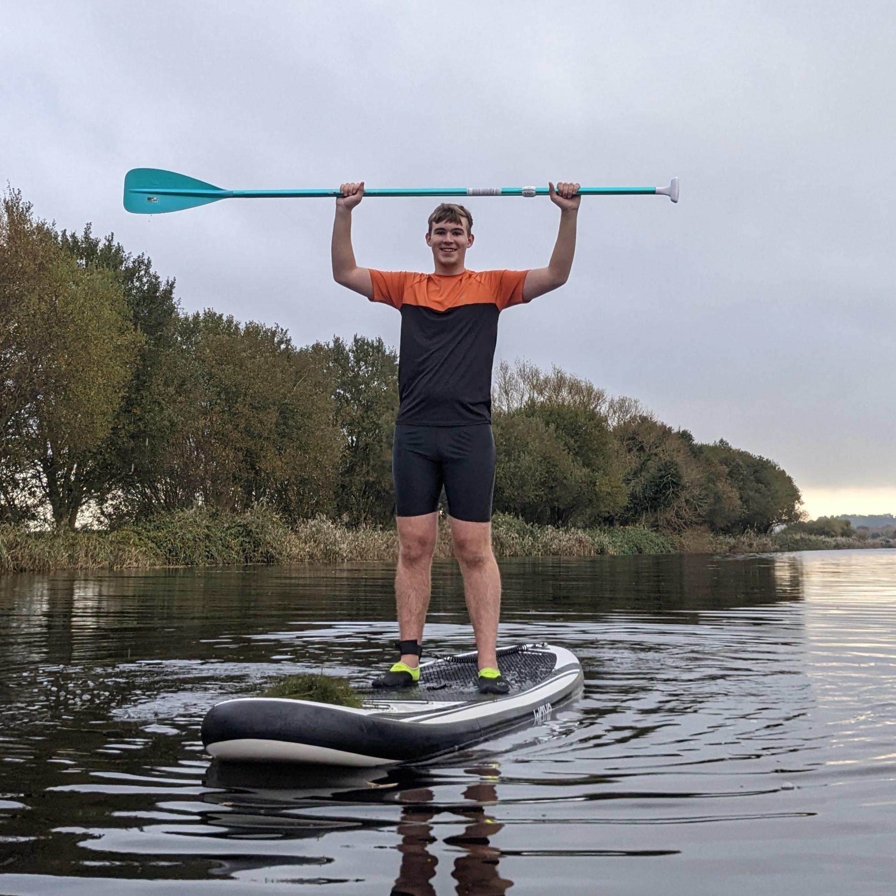
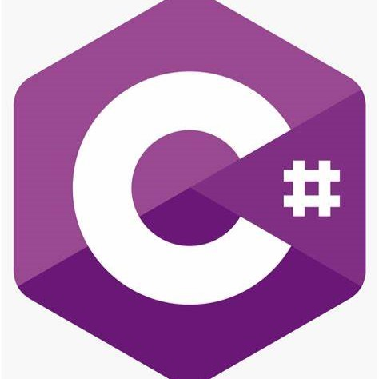

Hello and welcome to my portfolio website! My name is Seb and I am a
software engineering apprentice at Barnett Waddingham, a leading
independent UK professional services consultancy. I work on full stack
solutions, building websites for internal use but also for pension
customers. I am passionate about creating innovative and user-friendly
solutions for various domains and industries.
I have a keen interest in coffee, cycling and paddle boarding. Coffee
is not just a drink for me, but a science and an art. I love to
experiment with different beans, roasts, grinds and brew methods to
find the perfect cup. Cycling is my way of staying fit and having fun.
I like to cycle long distances and challenge myself with different
terrains and speeds. I have also upgraded my bike with some aero bars
to improve my aerodynamics and comfort. Paddle boarding is a relaxing
experience that allows me to enjoy the nature and the water. I find it
very calming and refreshing to paddle on a lake or a river.
You can learn more about me, my skills, my projects and my
achievements. You can also view some of the work samples that I have
done as part of my apprenticeship or personal projects. Feel free to
browse through the pages and contact me if you have any questions or
feedback. Thank you for visiting!
Bio

I have always loved cycling since I was a kid. It gives me a sense of
freedom, adventure, and challenge. I enjoy exploring new places,
meeting new people, and discovering new things on my bike. I usually
ride up to 50 miles per day, depending on the weather and the terrain.
I have participated in several cycling events and races, such as the
[London to Brighton Bike Ride] and the [Surrey Hills Challenge]. I am
always looking for new ways to improve my skills, fitness, and
endurance. Cycling is more than just a hobby for me; it is a passion
and a lifestyle.

I am passionate about coffee because it is a fascinating and diverse
world of flavors, aromas, and experiences. I love to explore different
types of coffee beans, roasts, and brewing methods, and to discover
how each one affects the taste and quality of the coffee. I enjoy
learning about the history, culture, and science of coffee, and how it
connects people from different regions and backgrounds. I also
appreciate the art and skill of making a perfect cup of coffee,
whether it is a simple filter coffee or a complex latte art. Coffee is
not only a drink that energizes me, but also a hobby that enriches me.

I am passionate about paddle boarding because it is a fun and relaxing
way to enjoy the water and nature. Paddle boarding is a sport that
involves standing on a board and using a paddle to propel yourself
across the water. It can be done on lakes, rivers, oceans, or any
other body of water. Paddle boarding is great for fitness, balance,
and coordination, as well as for exploring new places and scenery. I
love to paddle board with my friends or family, or sometimes alone, to
unwind and recharge. Paddle boarding is not only a sport that
challenges me, but also a hobby that soothes me.
Experience
I have been using React for over two years, and I enjoy creating
dynamic and interactive web applications with it. React is a powerful
library that allows me to build reusable components, manage the state
of my application, and handle user events. I have learned React from
various sources, such as online courses, books, blogs, and
documentation. I have also used other technologies and libraries that
complement React, such as Redux, React Router, Axios, Material UI, and
Firebase. I am always eager to learn new features and best practices
of React, and I strive to write clean, modular, and maintainable code.

I have been using C# in Unity for over a year, and I love creating
immersive and engaging games with it. C# is a versatile and expressive
language that allows me to write scripts that control the logic,
behaviour, and interaction of my game objects. I have learned C# from
various sources, such as online tutorials, books, forums, and
documentation. I have also used other tools and assets that enhance my
game development with C#, such as Visual Studio, MonoDevelop, Unity
Editor, Asset Store, and GitHub. I am always curious to learn new
features and techniques of C#, and I aim to write efficient, readable,
and reusable code.
I have been using vanilla JavaScript, HTML, and CSS for over three
years, and I have a solid foundation of web development with them.
Vanilla JavaScript, HTML, and CSS are the core technologies that
enable me to create responsive and interactive web pages. I have
learned them from various sources, such as online courses, books,
blogs, and documentation. I have also used other tools and frameworks
that work well with them, such as jQuery, Bootstrap, Sass, and
Webpack. I am always interested in learning new features and standards
of vanilla JavaScript, HTML, and CSS, and I try to write elegant,
semantic, and cross-browser compatible code.
Portfolio
I have been using React for over two years, and I enjoy creating
dynamic and interactive web applications with it. React is a powerful
library that allows me to build reusable components, manage the state
of my application, and handle user events. I have learned React from
various sources, such as online courses, books, blogs, and
documentation. I have also used other technologies and libraries that
complement React, such as Redux, React Router, Axios, Material UI, and
Firebase. I am always eager to learn new features and best practices
of React, and I strive to write clean, modular, and maintainable code.
I have been using C# in Unity for over a year, and I love creating
immersive and engaging games with it. C# is a versatile and expressive
language that allows me to write scripts that control the logic,
behaviour, and interaction of my game objects. I have learned C# from
various sources, such as online tutorials, books, forums, and
documentation. I have also used other tools and assets that enhance my
game development with C#, such as Visual Studio, MonoDevelop, Unity
Editor, Asset Store, and GitHub. I am always curious to learn new
features and techniques of C#, and I aim to write efficient, readable,
and reusable code.
I have been using vanilla JavaScript, HTML, and CSS for over three
years, and I have a solid foundation of web development with them.
Vanilla JavaScript, HTML, and CSS are the core technologies that
enable me to create responsive and interactive web pages. I have
learned them from various sources, such as online courses, books,
blogs, and documentation. I have also used other tools and frameworks
that work well with them, such as jQuery, Bootstrap, Sass, and
Webpack. I am always interested in learning new features and standards
of vanilla JavaScript, HTML, and CSS, and I try to write elegant,
semantic, and cross-browser compatible code.